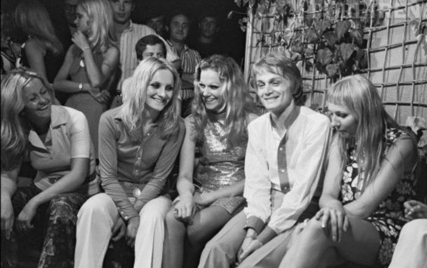
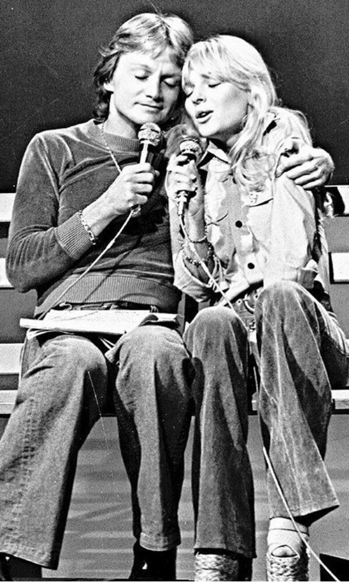
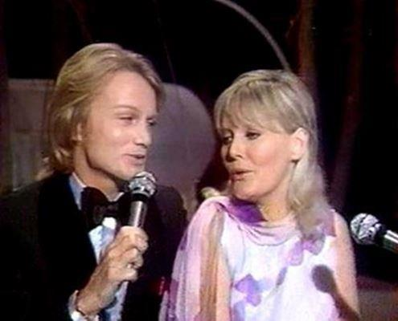
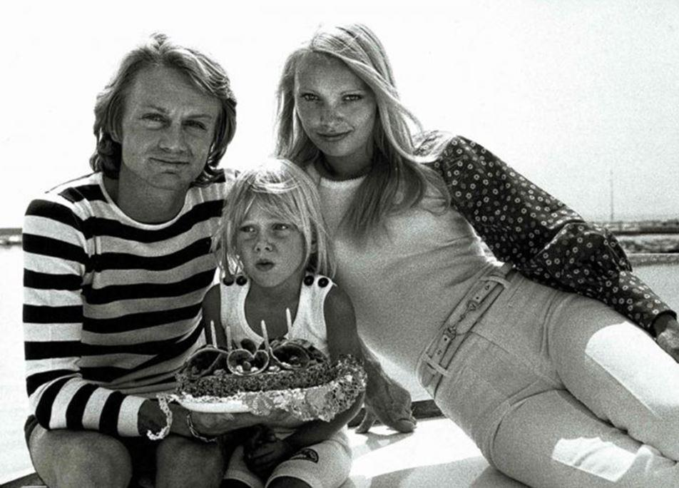

J'étais encore enfant lorsque Cristóbal Neverlost m'a dit : « Il faut que tu apprennes à détester les Beatles et à aimer Claude François. » Pour les premiers, je n'ai pas eu beaucoup de mal. Mais Claude François est un Christ. J'ai mis un certain temps à comprendre ça, mais il avait raison.
Ce type est bien une sorte de génie, oui, parfaitement, il faut être un génie pour faire des chansons comme Si j'avais un marteau, Comme d'habitude ou Alexandrie, Alexandra.
Les journalistes de l'époque, déjà presqu'aussi cons que ceux de maintenant, lui avait demandé :
« Pourquoi faire toujours du commercial ? » Du commercial ?! Faut vraiment ne rien comprendre à Cloclo, pour lui poser une question pareille ! « Ça fait quinze ans qu'on me pose la même question » s'était-il alors énervé, à juste titre. Les journalistes sont ces gens qui toute leur vie posent une seule et même question en se grattant le derrière. Claude François n'avait pas à répondre à ça, il était tellement certain de sa vérité qu'il ne lui serait même pas venu à l'idée de voir les choses sous cet angle-là. C'est toujours harassant de devoir s'expliquer, quand on a raison. Thelonious Monk, Charlie Parker, John Coltrane, Lester Young, Miles Davis, Duke, c'est bien, c'est même très bien, mais ils ont cherché toute leur vie, alors que Claude François, lui, il a trouvé. Presque du premier coup. Les femmes l'ont bien senti. Les femmes sont toujours attirées par les Christ. Mais lui ne chialait pas comme les artistes maudits qui passent leur temps à se plaindre. Johnny, Eddy Mitchell, Léo Ferré, Jacques Brel, tous des petits branleurs qui voulaient se faire plaindre en tricotant laborieusement leurs petites barboteuses asymétriques. Et ne parlons pas du pauvre Brassens, chanteur pour vieilles ados sur un retour définitif et trop cuit.
Il s'est construit sa pyramide, Cloclo, et il est dedans, à l'heure qu'il est, dans la chambre secrète, avec ses blondes aux yeux bleus — qui le touchent comme le corps glorieux qu'il est — qu'il continue à prendre en photo, bien mieux que cet eunuque de David Hamilton. De la poésie, de la musique, allons donc ! Cloclo avait autre chose à foutre, et il l'a su immédiatement, c'est ce qui lui a donné tout de suite cette précision et cette intensité irrécusables.
On ne peut pas comprendre la France si on n'aime pas Claude François. Mireille Mathieu avait bien senti ça, et elle a essayé toute sa vie, sans succès, d'être la voix de la France. Il ne peut pas y avoir deux places, quand on veut être au cœur de la pyramide. Claude François est le chanteur qui aura à lui tout seul invalidé définitivement tous les pseudos intellectuels déboutonnés qui daubaient sur "le commercial". Il n'y a guère que Sartre qui aura pu rivaliser un peu, un tout petit peu, avec le blondinet génial.
Ce n'est pas pour rien que sa première passion s'appelait France Gall, cette dernière étant un temps accompagnée par un groupe nommé « les Français ». À cette époque-là, les Français gagnaient encore le concours de l'Eurovision, même si c'est le Luxembourg que France Gall représentera en 1965, avec la chanson composée par Gainsbourg, dans laquelle celui-ci s'inspire d'un des thèmes du dernier mouvement de la première sonate de Beethoven. Mais la pauvre France Gall n'était qu'une poupée sans voix, ce que Cloclo comprend parfaitement quand il l'entend chanter à Naples ce soir de mars. Et puis, aurait-elle eu une voix qu'il aurait fallu la faire taire, plus encore. Le caveau du blondinet génial ne se partage pas, même avec une poupée aux yeux bleus qui prétendrait l'ouvrir et les fermer. François n'a pas besoin de « s'inspirer » de Beethoven, lui.
J'ai connu une strip-teaseuse, il y a une vingtaine d'années, à Paris, dont la sœur, strip-teaseuse également, arrondissait ses fins de mois en allant sucer « la voix de la France » (c'est elle qui employait cette expression) chez elle, une fois de temps à autre, et j'adorais qu'elle nous raconte ses équipées buccales et cocardières, avec son sirupeux accent brésilien. Imaginer cette fille en train de promener sa langue entre les lèvres fripées et exténuées, mais tout de même fumantes, de "la voix de la France" me plongeait à chaque fois dans une grande joie. Cette jeune femme très dégourdie n'aurait jamais plu à la véritable voix de la France (elle était brune et avait les yeux noirs), mais ça je me suis bien gardé de le lui dire. N'empêche, quand dans cette boîte, une des filles faisait son numéro sur Alexandrie, Alexandra, et c'est arrivé plus d'une fois, il me semblait évident, à l'époque, qu'il ne pouvait s'agir que d'un second degré assez méchant pour notre Claude national. Eh bien je me trompais. Ces jeunes femmes, pour la plupart, adoraient cette chanson, et n'auraient jamais eu l'idée de s'en moquer. J'aurais dû m'apercevoir alors qu'il se passait quelque chose d'étrange, entre les générations, mais j'avais d'autres chats à fouetter, et on ne voit que ce que l'on est capable de voir et d'entendre à un moment donné. J'étais aveugle et sourd, aveuglé par de superbes paires de fesses dont les denses forêts tropicales cachaient mal mon arbre dressé (à tous les sens de ce mot) de petit bourgeois parisien. Je me moquais éperdument des musiques choisies par ces adorables créatures, et j'avais même développé une sorte de muscle virtuel qui me permettait de baisser des paupières auditives pour me concentrer sur le sens de la vue. Autant dire que Claude François était le cadet de mes soucis, et n'importe qui m'en aurait entretenu alors aurait provoqué chez moi une surprise colossale et non feinte.
J'aime ces retours imprévus, ces dégoûts qui nous reviennent en plein visage, mais avec une physionomie méconnaissable, de longues années après que la vie semble avoir atteint son acmé et où nous sommes tellement certains d'être arrivés au terme d'une évolution unidirectionnelle et dont le sens prend un caractère quasi sacré, tellement le personnage dont on a fini par accepter qu'il soit bien nous nous semble parfait, parfaitement accompli, terminé, abouti, fini, clos. Les retours dont je parle sont des retours qui ouvrent une autre voie à travers les miroirs, une autre histoire, ils portent en eux un ferment qui ne cesse jamais d'agir, et qui agit d'autant plus que nous nous croyions définitivement insensibles à son action.
Chaque nation a ses poupées, et l'âme d'un pays se lit dans la manière dont celui-là les caresse, les maltraite, les démonte et les montre. Il y a du monstre en Claude François, bien sûr, idiot serait celui qui le nierait ou chercherait à diminuer la puissante magie noire qui le faisait alors paraître beau. Il n'est pas question de nier qu'il possède une voix atroce, et un physique à la mesure exacte de cette voix, ni que ses chorégraphies sont d'une laideur stupéfiante, au sens propre. Tout cela crève les yeux, et l'écran, et le goût. Ah, vous faites donc partie de la famille ! dit le spectateur incrédule de sa propre vie, et incrédule surtout de constater qu'il fait bel et bien partie d'une humanité qui ne sépare pas tout à fait Claude François et Luciano Pavarotti, ni Breivik et la littérature. Quel rapport avec le Bel Canto ? Mais écoutez donc Si j'avais un marteau ! Qu'on est loin de Gainsbourg et de ses seconds degrés téléphonés qui se croient malins !
Si j'avais un marteau / Je cognerais le jour / Je cognerais la nuit / J'y mettrais tout mon cœur / Je bâtirais une ferme / Une grange et une barrière / Et j'y mettrais mon père / Ma mère, mes frères et mes sœurs / Oh oh, ce serait le bonheur…
Mettez-y une musique de Bellini, faites-le chanter en italien, vous allez voir que ça fonctionne très bien. Pas de pseudo-sophistication tapette à la Beatles, on est plus près de Pétula Clark, et de son Down-Town. Des enchaînements d'accords bien carrés, francs du collier, c'est de la variété qui ne pète pas plus haut que son cul mais qui connaît son affaire et ne vous vend pas des cravates en Tergal pour des carrés Hermès.
D'accord, Pétula Clark chante beaucoup mieux que Claude François, et ne parlons même pas d'une Céline Dion aujourd'hui, mais ces trois-là vont directement au but, sans se trémousser du croupion pour masquer le néant qui les habite. Le néant, ils l'accueillent, mais ils n'en parlent pas, ça ne se fait pas de parler de ces choses-là quand on fait de la chanson. L'humanité s'est plantée à l'embranchement, la cause est entendue. Mais quand on remonte un peu le temps, une fois tous les dix ans, on ne peut s'empêcher de se demander à quoi ressemblerait le monde si…

Cloclo a écrit son grand succès « Comme d’habitude » en pleine crise sentimentale : sa séparation d’avec France Gall et sa rencontre avec Isabelle, qui lui donnera deux fils, Claude junior (sur la photo) et Marc.
À l'évidence, le monde n'a plus les yeux bleus et les cheveux blonds. Claude François a perdu la partie, enfin, nous avons perdu la partie, parce que lui, il a gagné, il s'est retiré à temps, et il est peinard dans sa pyramide électrique où personne n'aura idée d'aller lui expliquer sociologiquement que la France n'était pas ce qu'il croyait. De toute manière, les blonds aux yeux bleus, ça terrorise les survivants, et moins il y en a, plus ils sont effrayants. Claude François meurt le 11 mars 1978, et Breivik naît le 13 février 1979, soit moins d'un an plus tard. Dans ces quelques années où nous eûmes vingt ans (dix ans après 1968), des plaques tectoniques silencieusement ont glissé l'une sur l'autre, provoquant un changement radical de paysage, mais comme il faut une génération au moins pour que les yeux s'ouvrent sur une réalité entièrement nouvelle, c'est aujourd'hui qu'il nous semble que nous découvrons le monde qui est né à ce moment-là. Ces trente années ont été celles durant lesquelles le marteau de Claude François a définitivement changé d'emploi.
Partager cette page